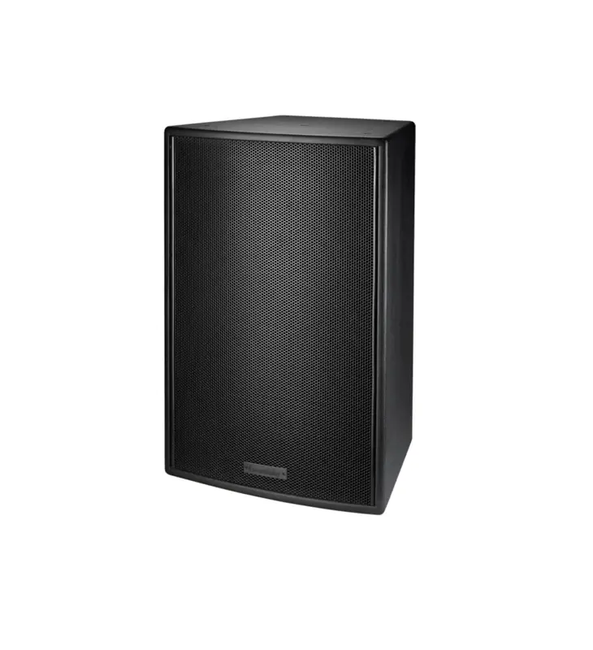

Корпусные громкоговорители
Точечные звуковые системы Biamp сочетают в себе великолепные технические характеристики, стильный дизайн и высокую надежность. Громкоговорители серии V2 – это бескомпромиссное качество звука в классическом форм-факторе, одинаково подходящем для офиса, ресторана или отеля. Серия MX воплощает отличные характеристики в компактном дизайне для небольших помещений. Водонепроницаемая серия W2 создана для небольших концертных площадок и парков, а серия R – это универсальное решение для воспроизведения музыки и речи в самых разных условиях. Наконец, серия I – это компактные громкоговорители на базе лучших технологий Biamp в изящном дизайне для использования в наиболее требовательных к качеству звука сферах.